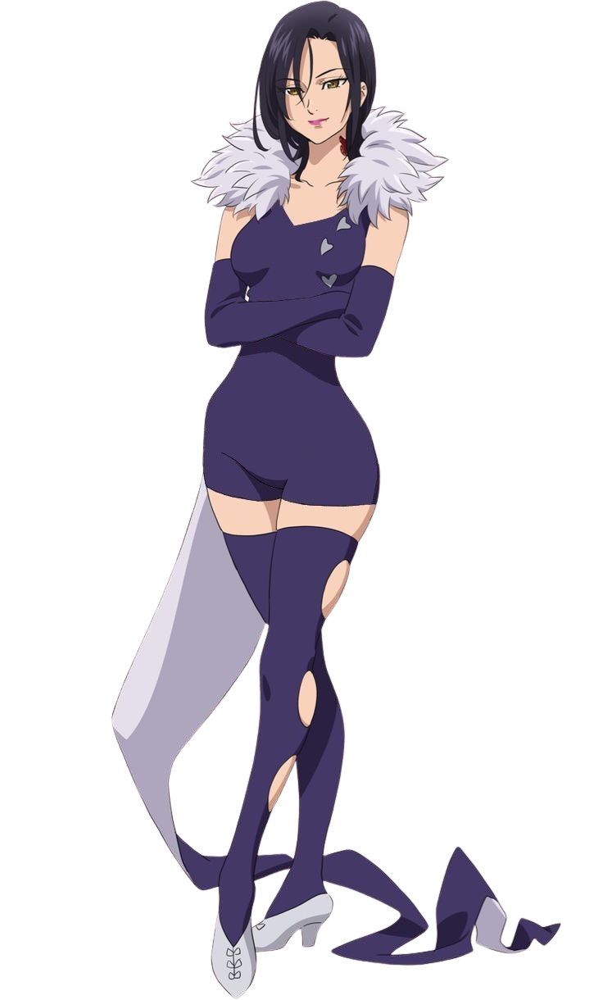
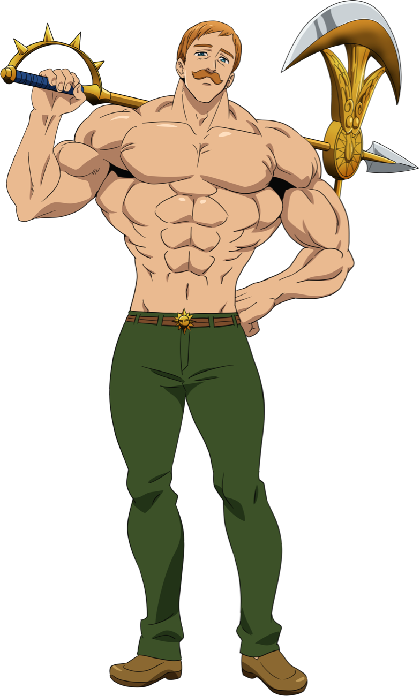

HISTÓRIA
O “Sete Pecados Capitais” (“The Seven Deadly Sins”) era o mais forte grupo de cavaleiros que
defendia a região de Britannia. Há dez anos eles foram acusados de tentar dar um golpe para
tomar o reino e teriam sido impedidos pelos Paladinos, guerreiros sagrados poderosíssimos do
reino de Lyonesse, e fugido.
Agora, dez anos depois, os Sete Pecados Capitais ainda são procurados e viraram lenda.
Ninguém sabe se eles estão vivos ou mortos, se estão unidos ou o que teria acontecido com
eles. Mas, ao mesmo tempo, começam a surgir indícios de que os Paladinos talvez não sejam
tão idôneos assim.
Pecados mais fortes:
Merlin
Pecado da gula
Saiba maisEscanor
Pecado do orgulho
Saiba maisMeliodas
Pecado da Ira
Saiba maisWallpapers: